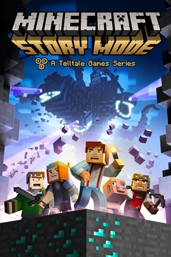

Minecraft adalah permainan sandbox 3D yang dikembangkan oleh Mojang Studios di mana pemain berinteraksi dengan lingkungan tiga dimensi yang dapat dimodifikasi sepenuhnya yang terbuat dari balok dan entitas. Aspek gimnya yang beragam memungkinkan pemain memilih cara bermainnya, memungkinkan banyak kemungkinan. Ada empat edisi Minecraft yang dipelihara secara aktif: Java Edition, Bedrock Edition, Education Edition, dan Chinese Edition.
Terdapat beberapa mode permaian yang dapat dimainkan oleh pemain, yaitu:
- Creative Mode
- Survival Mode
- Adventure Mode
- Spectator Mode
Creative Mode adalah mode permainan di mana pemain memiliki sumber daya yang tidak terbatas, kemampuan untuk terbang, dan tidak ada kebutuhan untuk makan. Pemain juga dapat memanfaatkan kemampuan untuk memanggil entitas, seperti mobs dan petir. Pemain juga dapat mengakses item yang tidak tersedia dalam Survival Mode melalui menu Inventaris mereka.
Survival Mode adalah mode permainan di mana pemain harus mengumpulkan sumber daya, membangun struktur, bertahan dari monster, mengelola kelaparan, dan menjelajahi dunia untuk bertahan hidup. Pemain memiliki bar kesehatan, kelaparan, dan napas, dan harus mengelola sumber daya mereka untuk menjaga agar tetap hidup.
Adventure Mode adalah mode permainan di mana pemain tidak dapat menghancurkan atau menempatkan blok, kecuali dengan alat yang tepat. Ini dimaksudkan untuk membuat petualangan pemain di dunia Minecraft tanpa mengganggu struktur yang dibuat oleh pemain lain.
Spectator Mode adalah mode permainan di mana pemain dapat terbang melalui blok dan entitas, tetapi tidak dapat berinteraksi dengan mereka, dan tidak terlihat oleh pemain lain. Ini memungkinkan pemain untuk melihat dunia dari sudut pandang orang ketiga (seperti mode kamera), dan pemain tidak dapat mengambil kerusakan, tetapi tidak dapat melihat inventaris mereka, dan tidak dapat melihat pesan di chat.
Dengan kesuksesan game Minecraft, dibuatlah berbagai genre game Minecraft lainnya yang memberikan pengalaman bermain yang baru dan menarik bagi para pecinta Minecraft. Game-game tersebut diantaranya sebagai berikut.
| Cover | Judul | Genre | Developer | Tahun RIlis |
|---|---|---|---|---|
|
Minecraft | Sandbox, Survival | Mojang Studios | 2011 |
|  | Minecraft Story Mode (Discontinued) |
Graphic Adventure | Telltale Games | 2015 |
 |
Minecraft Earth (Discontinued) |
Augmented Reality | Mojang Studios | 2019 |
 |
Minecraft Dungeons | Action, Adventure | Mojang Studios | 2020 |
 |
Minecraft Legends | MMORPG | Mojang Studios | 2021 |